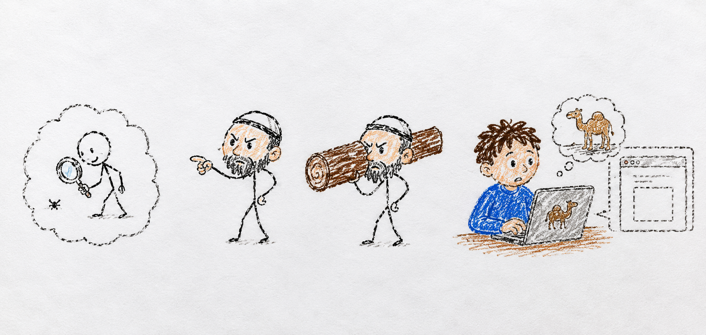

Your worst blind spot is the thing you are best at
By week six at a new job, I had met my boss exactly twice. The second time was in the HR office. The company was cutting headcount, he was sorry, and I was one of the people being let go.
I asked him for feedback. He was honest. Six weeks is an unfair window to judge anyone, he said, and he knew it. But he had to let someone go, and from the way I had communicated, he never got the impression I was someone the team could not replace.
Here is the part I still think about. Since 2016 I had been teaching workplace communication, in a college and as a freelancer. I taught people, for money, how to make their value legible at work. And I got cut because I had not made mine legible. The communication teacher, cut for communication.

Why is your worst blind spot the thing you are best at?
Because expertise quietly turns into an assumption. You are good at the thing, so you assume the thing is handled, so you stop looking at it. The looking is exactly what you sell to everyone else, and it is the one place you never point it.
There is an old line for this. In the Gospel of Matthew: “Why do you look at the speck in your brother’s eye, but do not notice the beam in your own?” (Matthew 7:3). The Talmud puts it more sharply, because it makes the beam the expert’s problem. טול קורה מבין עיניך, “take the beam from between your own eyes” (Bava Batra 15b). The person quick to point out your speck is usually walking around with a plank in his.
I would like to tell you I learned this once, in that HR office, and fixed it. I did not. Years later I built a service whose entire purpose is to make researchers’ work visible, to get good work in front of the people who should see it. And for months the service itself had no visible presence. No blog. Nothing a person, or an AI search engine, would surface when they went looking. I had spent years telling people to take the speck out of their eye, and walked around with the same beam in mine.
How do you find a blind spot you cannot see?
If you could see it, it would not be a blind spot. So you cannot wait to notice. You have to go looking on purpose, in the place you least expect to find anything, which is your area of competence.
Three things have worked for me, none of them comfortable.
Run your own audit on yourself. You already have a checklist you apply to other people’s work in your field. Apply it to your own, coldly, as if it belonged to a stranger. The communication teacher never once graded his own first six weeks.
Ask for the feedback before someone is forced to give it to you. The only honest feedback I got at that job arrived in the room where it was already too late to use it. Ask the question while you can still act on the answer.
Put your own work on the record, the way you tell everyone else to. Not because the world is waiting for it, but because making it legible is how you find out whether you have been doing the work or just assuming you have.
Loud Camel news
This week I finally pulled the beam out of my own eye a little. Loud Camel, a tool that helps researchers get cited and recognized, is the service that had no visible presence of its own, so I stood up its blog, moved nine posts onto it, and turned on analytics so I can see who shows up instead of guessing. None of that is a launch. It is just me finally doing for my own service the thing I keep telling everyone else to do.
Takeaway
Point your expertise at yourself this week, in the one area you are most sure you have handled. That is exactly where the beam is.